Kapal kecil di War Thunder adalah kapal kecil berkecepatan tinggi yang biasanya dipersenjatai senapan mesin, autocannon, atau torpedo, berfungsi untuk serangan cepat dan manuver agresif di jarak dekat.
Contoh:
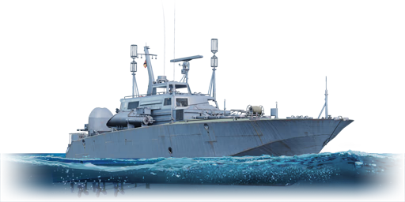
PR-131
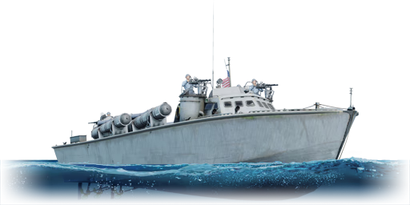
PT-71
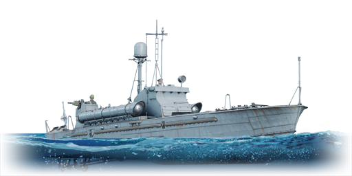
PR-123K
Kapal berat adalah varian kapal kecil yang lebih besar dan lebih berat dibanding boat biasa, memiliki persenjataan lebih kuat dan ketahanan lebih baik, tetapi tetap mengandalkan kecepatan dan mobilitas untuk bertahan hidup.
Contoh:
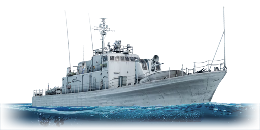
USS Ashville
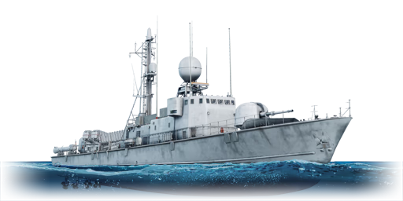
Albatros
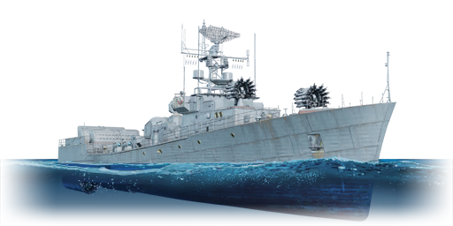
MPK-204
Kapal fregat dalam konteks War Thunder merujuk pada kapal pengawal berukuran menengah dengan kombinasi meriam, senjata anti-udara, dan kadang torpedo, yang dirancang untuk fleksibel dalam pertempuran melawan kapal kecil maupun ancaman udara.
Contoh:
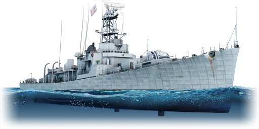
USS Dealey
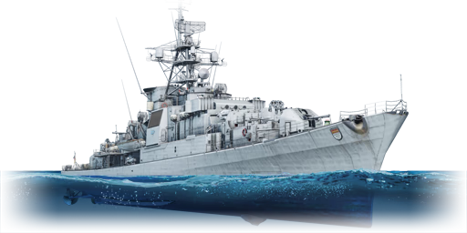
Koln
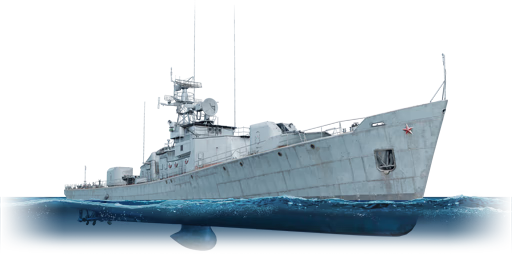
SKR-159
Kapal penghancur adalah kapal perang cepat dengan meriam kaliber menengah, torpedo, dan pertahanan anti-udara yang kuat, berfungsi sebagai tulang punggung pertempuran tingkat menengah dan efektif melawan kapal kecil hingga cruiser ringan.
Contoh:
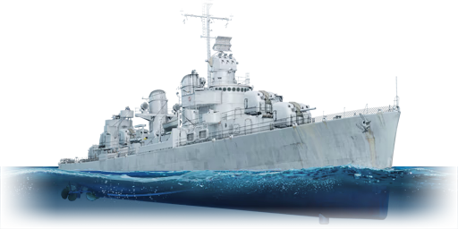
USS Fletcher
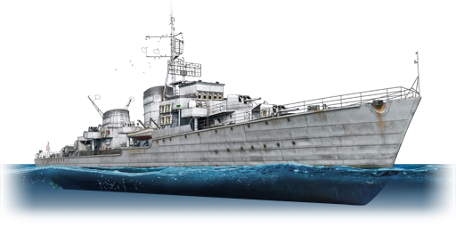
Z-51
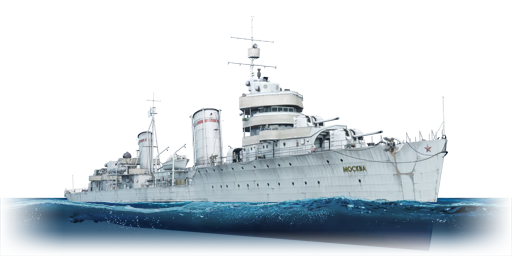
Moskva
Light cruiser adalah kapal perang yang lebih besar dari destroyer dengan meriam utama berkaliber lebih kecil dibanding heavy cruiser, tetapi memiliki kecepatan tinggi, banyak meriam sekunder, serta pertahanan yang cukup untuk pertempuran jarak menengah.
Contoh:
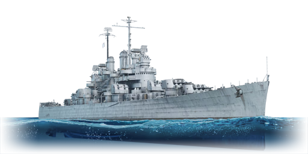
USS Cleveland
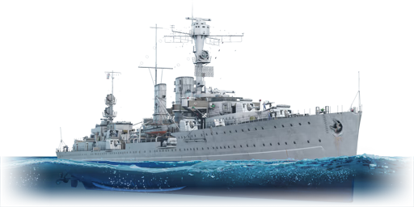
Emden
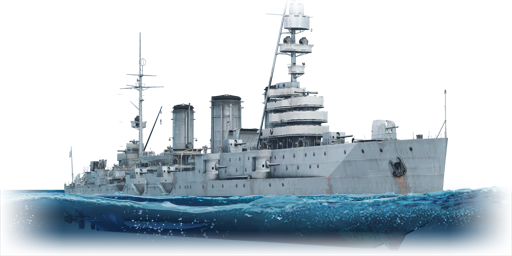
Krasny Krym
Heavy cruiser adalah kapal penjelajah dengan meriam utama berkaliber besar dan daya tembak kuat, dirancang untuk bertempur jarak jauh serta mampu menahan serangan lebih baik daripada light cruiser.
Contoh:
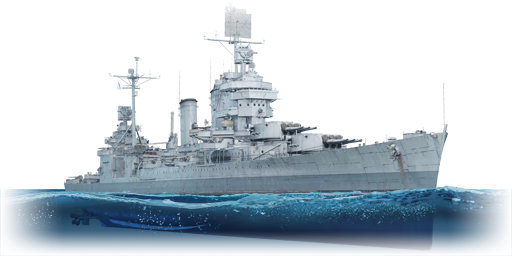
USS New Orleans
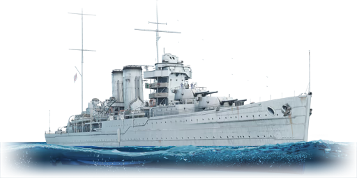
HMS York
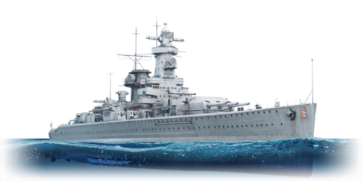
Admiral Graf Spee
Battlecruiser adalah kapal perang besar dengan persenjataan mendekati battleship tetapi dengan perlindungan lapis baja lebih ringan demi mempertahankan kecepatan tinggi, sehingga mengandalkan kombinasi daya tembak dan mobilitas.
Contoh:
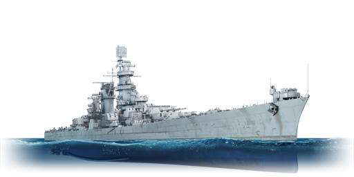
USS Alaska
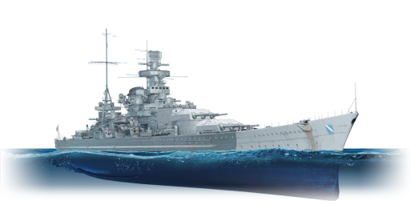
Scharnhorst
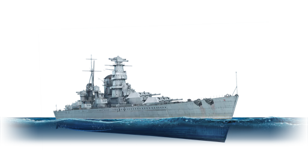
Kronshtadt
Battleship adalah kapal perang terbesar dan terkuat di War Thunder, memiliki meriam utama berkaliber sangat besar, lapis baja tebal, serta daya tahan tinggi, dirancang untuk mendominasi pertempuran laut jarak jauh dan menghancurkan kapal kelas di bawahnya.
Contoh:
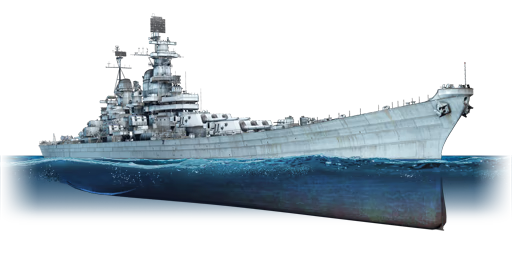
USS Iowa
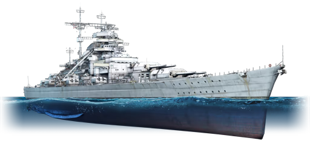
Bismarck
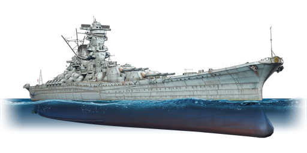
IJN Yamato